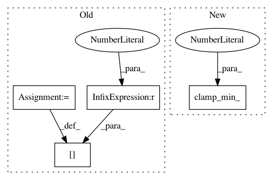

5798da03ec746645773267832214e28d286d5b21,gpytorch/lazy/kronecker_product_lazy_tensor.py,KroneckerProductLazyTensor,_symeig,#KroneckerProductLazyTensor#Any#,152
Before Change
// we chop any negative eigenvalues
neg_evals = zeros_like(evals_)
neg_evals[evals_.data < 0] = -evals_.data[evals_.data < 0]
evals_ = evals_ + neg_evals
evals_ = evals_.type(tensor_dtype)
evecs_ = evecs_.type(tensor_dtype)
After Change
evals_, evecs_ = eval_tensor.double().symeig(eigenvectors=eigenvectors)
// we chop any negative eigenvalues
evals_.clamp_min_(0.0)
evals_ = evals_.type(tensor_dtype)
evecs_ = evecs_.type(tensor_dtype)
In pattern: SUPERPATTERN
Frequency: 3
Non-data size: 4
Instances
Project Name: cornellius-gp/gpytorch
Commit Name: 5798da03ec746645773267832214e28d286d5b21
Time: 2020-07-10
Author: wjm363@nyu.edu
File Name: gpytorch/lazy/kronecker_product_lazy_tensor.py
Class Name: KroneckerProductLazyTensor
Method Name: _symeig
Project Name: cornellius-gp/gpytorch
Commit Name: e03463567dbb8f33a161cab7b4d50d7d8b657fea
Time: 2018-12-28
Author: gardner.jake@gmail.com
File Name: gpytorch/kernels/kernel.py
Class Name: Kernel
Method Name: __slow_sq_dist
Project Name: cornellius-gp/gpytorch
Commit Name: 42109eda22963a219ddb18dff58334f50ca10a07
Time: 2020-07-07
Author: wjm363@nyu.edu
File Name: gpytorch/lazy/kronecker_product_lazy_tensor.py
Class Name: KroneckerProductLazyTensor
Method Name: _symeig